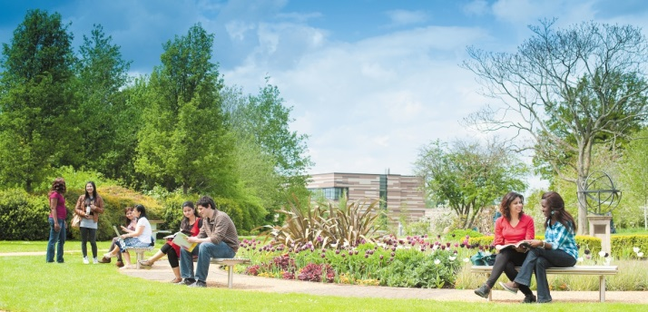
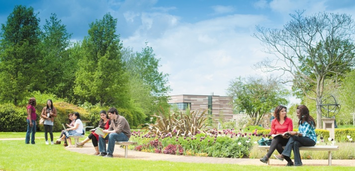
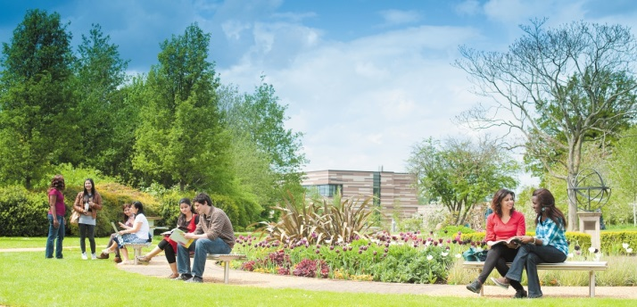
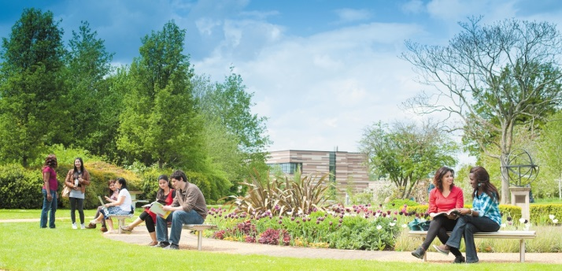

Spread over 1200 acres of land, University of Karachi was established through the parliament as a Federal University in 1951. However, through another act of the parliament in 1962 its status was redefined as university of the province of Sindh. On 23rd October, 1950 the Karachi University Act was passed and after an amendment in 1951, it was enacted and Prof A. B. A Haleem was appointed as its first Vice Chancellor. For the first two years, the University of Karachi remained as an examination University for the affiliated colleges. In the year 1953, it started its teaching and research activities at two Faculties of Arts and Science. Opened with an initial intake of 50 students, the university is now a sprawling structure of 53 Departments and 20 world class and highly reputable Research Centers and Institutes, under eight faculties of Arts, Science, Islamic Studies, Pharmacy, Management and Administrative Sciences, Law, Education and Medicine. At present, the enrolment of regular students at the Campus is slightly over 24,000. There are over 800 teachers and more than 2500 supporting staff.
read more